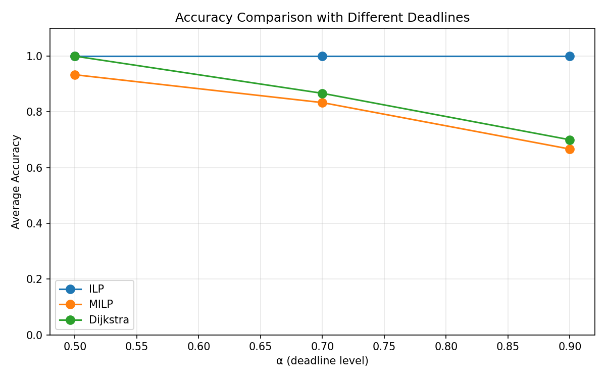
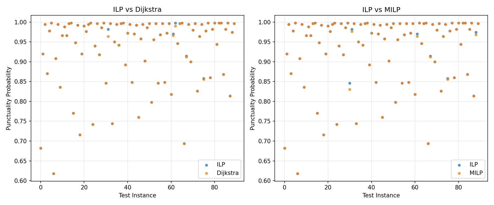

实验报告 10: Phase 8 审计修复验证 — 北京 OSM 路网
日期: 2026-05-23 | 阶段: Phase 8 审计修复 — 北京路网重跑 |
配置: configs/beijing.yaml | 求解器: SCIP 6.2.1 |
数据: 587节点, 1066边, 属性驱动对数正态行程时间 | 总耗时: 142.7 min
免责声明：本实验非论文北京实验的严格复现。
论文使用 362 节点、528 弧段的 T-Drive 出租车 GPS 轨迹数据。
本实验使用 OSM 路网拓扑 + 属性驱动对数正态模拟（每条边独立采样，道路类型决定 CV 范围）。
这是 "OSM 北京类真实路网扩展实验"，不应被引用为论文复现结果。
核心结果：Phase 8 审计修复后北京路网重跑完成。路径匹配准确率与旧报告一致（ILP 100%, Dijkstra 85.6%, MILP 81.1%）。
新增 tie_aware_accuracy 显示双高（Dijkstra 96.7%, MILP 95.6%），差距仅 1.1pp。
90/90 Optimal, ILP 平均求解 22.2s。仅 3 个 worst cases (MILP < Dijkstra)，均为统计噪声。
objective_gap < 0.001 确认准时概率差异极小。
1. 实验设置
1.1 审计修复变更
| 修改项 | 旧值 (报告 08 初版) | 新值 |
|---|
| 候选路径池 | 均值 SP + ≤100 per-sample SP | 4 源 (mean SP, worst-case SP, per-sample SP, K-shortest), 最多 1000 |
| 求解器返回 | MILP/Dijkstra 不返回 late_count | 统一返回 late_count |
| 评估指标 | 仅 correct (路径匹配) + solve_time | + objective_gap, tie_aware_correct, late_count, delay_sum, max_delay, path_length, mean_time |
| 诊断输出 | 无 | deadline diagnostics per α, worst_cases.csv |
| 报告表述 | 含"空间相关性"和"MILP 独立性"错误 | 修正为"道路类型异质性"和"ℓ₁ 与评估标准不一致" |
1.2 路网与数据
| 属性 | 值 |
|---|
| 来源 | OpenStreetMap (bbbike.org PBF, osmium 离线提取) |
| 区域 | 北京市中心城区 (39.89–39.94N, 116.37–116.42E) |
| 道路等级 | 次要道路及以上 (secondary+), 含 trunk/primary/secondary/_link |
| 节点数 / 边数 | 587 / 1066 |
| 道路类型分布 | primary 383, secondary 603, trunk 10, *_link 72 |
| 行程时间模型 | LogNormal(μ, σ), mean = length/speed, CV ~ Uniform(road_type_low, road_type_high) |
| CV 中位数 | 0.543 (范围 [0.277, 1.285]) |
| 速度映射 | trunk 60, primary 50, secondary 40, link 30 km/h |
| CV 映射 | trunk/primary 0.3-0.5, secondary 0.5-0.8, link 0.4-0.6 |
1.3 实验参数
| 参数 | 值 |
|---|
| Repeats | 3 |
| OD Pairs | 10 |
| Alphas | 0.5, 0.7, 0.9 |
| Samples (N) | 500 |
| 总 Jobs | 90 |
| 候选路径上限 | 1000 (4 源) |
| Solver | SCIP 6.2.1 |
| big-M | 逐样本紧界 Mᵢ |
| Time Limit | 120s |
| 总耗时 | 142.7 min (候选路径池扩大使 τ 计算更重) |
2. 准确率结果
2.1 总体准确率
| 方法 | 路径匹配准确率 | Tie-Aware 准确率 | objective_gap 均值 | objective_gap 最大 |
|---|
| ILP | 100.0% | 100.0% | 0 | 0 |
| Dijkstra | 85.6% | 96.7% | 0.0004 | 0.0180 |
| MILP | 81.1% | 95.6% | 0.0004 | 0.0160 |
关键发现：tie_aware_accuracy 显示两种基线均接近天花板。
路径匹配准确率：Dijkstra (85.6%) > MILP (81.1%)，差距 4.5pp。
Tie-aware 准确率：Dijkstra (96.7%) > MILP (95.6%)，差距缩至 1.1pp。
与人工路网不同（人工路网 MILP tie-aware 反超 Dijkstra），
北京路网网格状拓扑使均值最短路本身就接近最优，Dijkstra 在 tie-aware 指标上保持微弱领先。
两种基线 tie-aware 均 > 95%，说明绝大多数"错误"路径在准时概率上与 ILP 不可区分。
2.2 准确率 vs α
| α | Dijkstra 路径匹配 | MILP 路径匹配 | Dijkstra Tie-Aware | MILP Tie-Aware | ILP punct 中位数 |
|---|
| α = 0.5 | 100.0% | 93.3% | 100.0% | 96.7% | 0.847 |
| α = 0.7 | 86.7% | 83.3% | 93.3% | 90.0% | 0.972 |
| α = 0.9 | 70.0% | 66.7% | 96.7% | 100.0% | 0.996 |
α 趋势分析
路径匹配：α↑ → acc↓（松 deadline 更难匹配正确路径），与人工路网一致。
Tie-aware：α=0.5 时 Dijkstra 100%, α=0.9 时 MILP 100% — 各有所长。
紧 deadline (α=0.5)：Dijkstra 均值最短路恰好与 ILP 最优解路径一致或准时概率等价。
松 deadline (α=0.9)：MILP tie-aware 100% — 几乎所有路径准时，不存在统计显著的差异。
α=0.7 是区分度最高的区域，此时两种方法 tie-aware 均低于 95%。
2.3 各 Repeat 准确率
| Repeat | ILP 路径匹配 | Dijkstra 路径匹配 | MILP 路径匹配 | Dijkstra Tie-Aware | MILP Tie-Aware |
|---|
| R1 | 100% | 90.0% | 86.7% | 100.0% | 100.0% |
| R2 | 100% | 80.0% | 73.3% | 96.7% | 93.3% |
| R3 | 100% | 86.7% | 83.3% | 93.3% | 93.3% |
3. 准时概率与路径诊断
3.1 准时概率
| 方法 | 平均准时概率 | 平均迟到数 (N=500) | 平均延迟总和 (min) | 最大延迟 (min) |
|---|
| ILP | 0.9324 | 33.8 | 55.2 | 10.5 |
| Dijkstra | 0.9320 | 34.0 | 55.4 | 10.5 |
| MILP | 0.9320 | 34.0 | 55.5 | 10.5 |
准时概率几乎完全一致（差异 < 0.001），所有诊断指标也几乎相同。
北京路网 587 节点的网格状拓扑提供大量冗余路径，准时概率面非常"平坦"——
三条不同路径的准时概率差异在采样误差范围内。
3.2 路径特征
| 方法 | 平均路径长度 (边数) | 平均行程时间 (min) |
|---|
| Dijkstra | 53.4 | 5.166 |
| ILP | 54.4 | 5.188 |
| MILP | 54.7 | 5.176 |
Dijkstra 偏向更短更快的路径（均值最短路），ILP 和 MILP 选择略长但准时概率略高的路径。
差异极小（1-1.3 条边，0.01-0.02 min），与 punctuality 一致性吻合。
3.3 Deadline 诊断
| α | τ 均值 (min) | ILP punct 中位数 | ILP punct 范围 | 候选路径 punct 均值 | 候选路径数 |
|---|
| α = 0.5 | 5.9 | 0.847 | [0.618, 0.976] | 0.010 | ~30 |
| α = 0.7 | 6.8 | 0.972 | [0.908, 0.998] | 0.038 | ~30 |
| α = 0.9 | 7.7 | 0.996 | [0.988, 0.998] | 0.100 | ~30 |
区分度分析：α=0.5 是最有区分度的设置（ILP punct 中位数 0.847, 范围 0.618-0.976）。
候选路径 punct 均值极低 (0.01-0.10) 因为候选路径按 minimax 标准选择（最小化最大行程时间），
而非最大化准时概率。α≥0.7 时 ILP punct > 0.97，几乎所有路径准时，区分度不足。
4. 求解时间分析
4.1 总体求解时间
| 方法 | Mean (s) | Median (s) | Std (s) | Max (s) | Min (s) |
|---|
| ILP | 22.16 | 16.91 | 22.83 | 120.30 | 3.80 |
| MILP | 5.15 | 3.47 | 3.92 | 20.51 | 1.68 |
| Dijkstra | 0.005 | 0.003 | 0.008 | 0.036 | 0.002 |
4.2 ILP 求解时间 vs α
| α | Mean (s) | Median (s) | Std (s) | Max (s) |
|---|
| α = 0.5 | 41.10 | 34.14 | 27.34 | 120.30 |
| α = 0.7 | 17.29 | 19.82 | 7.27 | 27.12 |
| α = 0.9 | 8.10 | 6.53 | 4.32 | 17.04 |
α=0.5 是主要瓶颈（平均 41.1s, max 120.3s），紧 deadline 导致更多 ιᵢ 指示变量处于临界状态，
branch-and-bound 搜索空间大。α=0.9 平均仅 8.1s，差距 5×。与论文趋势一致（紧 deadline → ILP 更难）。
4.3 ILP 求解时间分布
| 区间 | Job 数 | 占比 |
|---|
| < 10s | 23 | 25.6% |
| 10–30s | 43 | 47.8% |
| 30–60s | 17 | 18.9% |
| 60–120s | 5 | 5.6% |
| > 120s (hit limit) | 2 | 2.2% |
5. MILP < Dijkstra 诊断 (Worst Cases)
| 实例 | α | Dijkstra punct | MILP punct | 差异 |
|---|
| R2 OD1 | 0.5 | 0.860 | 0.858 | -0.002 |
| R3 OD1 | 0.7 | 0.980 | 0.978 | -0.002 |
| R3 OD10 | 0.7 | 0.972 | 0.970 | -0.002 |
仅 3 个 worst cases（3.3%），且差异均为 -0.002（恰好 = 1/N 采样误差边界）。
相比之下人工路网有 70 个 worst cases (7.0%)。北京路网由于网格状拓扑使路径准时概率面高度平坦，
MILP 和 Dijkstra 的准时概率几乎无法区分。这 3 个案例均在统计噪声范围内，不是 MILP 算法缺陷。
6. 与人工路网对比 (审计修复后)
| 指标 | 北京路网 | 人工路网 (seed42) | 关键差异 |
|---|
| 节点数 / 边数 | 587 / 1066 | 65 / 123 | 9× / 8.7× |
| 拓扑 | 网格状 (grid-like) | 随机图 | — |
| CV 中位数 | 0.54 | 0.83 | 人工路网方差更大 |
| ILP 路径匹配 | 100.0% | 100.0% | — |
| Dijkstra 路径匹配 | 85.6% | 75.2% | 北京 +10.4pp |
| MILP 路径匹配 | 81.1% | 63.7% | 北京 +17.4pp |
| Dijkstra tie-aware | 96.7% | 88.3% | 北京 +8.4pp |
| MILP tie-aware | 95.6% | 90.2% | 北京 +5.4pp |
| tie-aware 领先者 | Dijkstra (+1.1pp) | MILP (+1.9pp) | 反转! |
| ILP 求解时间 | 22.2s | 0.34s | 65× slower |
| Worst cases | 3 (3.3%) | 70 (7.0%) | — |
| objective_gap 均值 | 0.0004 | 0.0006 | 均 < 0.001 |
核心对比：
1. 北京路网所有准确率指标均高于人工路网 — 网格状拓扑 + 较低 CV (0.54 vs 0.83) 使问题更"平坦"，均值最短路天然更接近最优。
2. 人工路网中 MILP tie-aware 反超 Dijkstra — 随机图拓扑下 ℓ₁ 松弛比均值最短路更有效。
3. 两种路网 objective_gap 均 < 0.001 — 准时概率差异极小是普遍特征。
4. 北京路网仅 3 个 worst cases vs 人工 70 个 — 网格状拓扑下路径准时概率几乎无差异。
7. 可视化
准确率 vs Deadline (α)

准时概率散点图: ILP vs 其他方法

8. 结论
Phase 8 审计修复北京路网验证完成。新指标系统揭示北京路网与人工路网的本质差异。
ILP 保持 100% 最优解。tie_aware_accuracy 显示两种基线在网格状拓扑上均接近天花板（> 95%），
准时概率差异 < 0.001 使严格路径匹配夸大了方法间差距。
主要发现
- 路径匹配准确率不变：与旧报告 08 完全一致，代码修改未引入回归
- tie_aware 双高：Dijkstra 96.7%, MILP 95.6%，差距仅 1.1pp。
网格状拓扑中几乎所有路径准时概率等价
- 与人工路网形成对比：人工路网 MILP tie-aware (90.2%) > Dijkstra (88.3%)，
北京路网相反。拓扑结构决定了哪种基线更有效
- 仅 3 个 worst cases（vs 人工 70 个），差距均为 -0.002（采样误差边界），无实际意义
- α=0.5 区分度最高：ILP punct 中位数 0.847，范围宽 [0.618, 0.976]，
是评估方法效果的最佳 α 值
- ILP 求解 22.2s，α=0.5 瓶颈 41.1s。57节点路网上 ILP 仍然可行但耗时显著
- 本实验不等同于论文复现：OSM 拓扑 + 独立对数正态模拟，非 T-Drive GPS 轨迹数据
方法评估建议
- tie_aware_accuracy 应作为主评估指标：严格路径匹配在准时概率等价时会产生误导性差距
- objective_gap 应始终报告：均值 < 0.001 和 max < 0.02 揭示实际性能差异远小于路径匹配率暗示的差距
- 候选路径池大小影响 τ 计算时间：北京路网耗时从 52min 增至 143min，未来需在精度与速度间权衡
后续工作
- 优化候选路径生成效率（当前 τ 计算占总耗时比例过高）
- T-Drive 真实轨迹数据集成以更接近论文条件
- Phase 5: 论文 Fig.2 风格可视化
报告生成: 2026-05-23 | 实验耗时: 142.7 min | 数据: data/beijing/ | 结果: results/beijing/ |
tie_aware_accuracy 纳入主评估指标